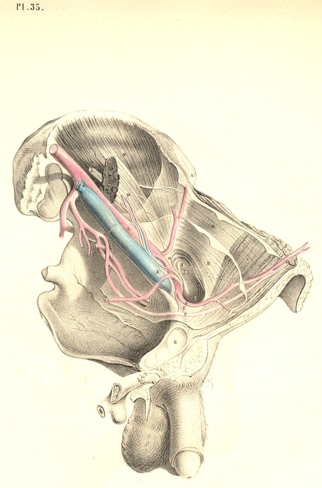
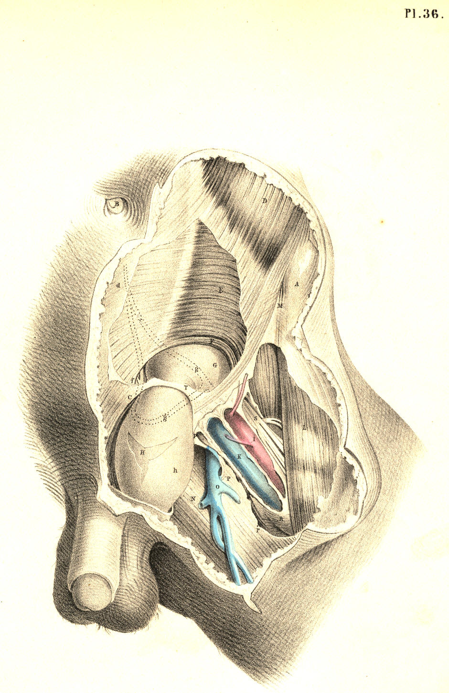
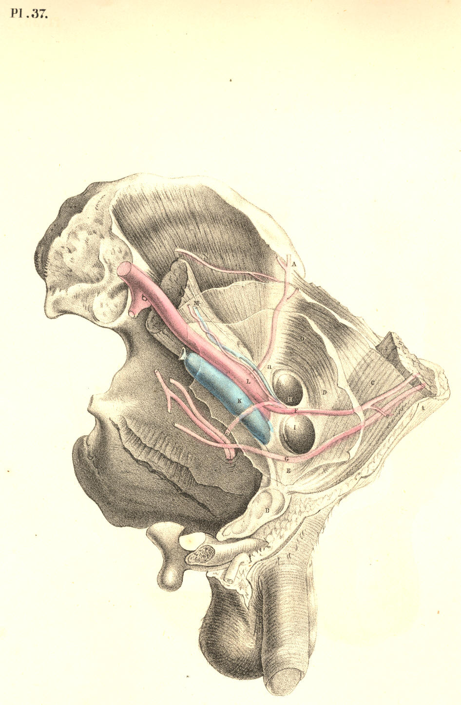
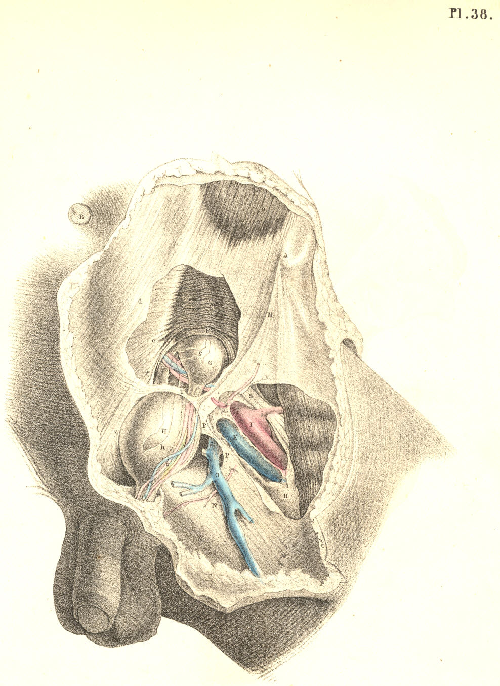

SURGICAL ANATOMY by JOSEPH MACLISE
COMMENTARY ON PLATES 35, 36, 37, & 38.
THE DISTINCTIVE DIAGNOSIS BETWEEN EXTERNAL AND INTERNAL
INGUINAL HERNIAE, THE TAXIS, THE SEAT OF STRICTURE, AND THE OPERATION.
A comparison of the relative position of these two varieties of herniae
is in ordinary cases the chief means by which we can determine their
distinctive diagnosis; but oftentimes they are found to exhibit such an
interchange of characters, that the name direct or oblique can no longer
serve to distinguish between them. The nearer the one approaches the
usual place of the other, the more likely are they to be mistaken the
one for the other. An internal hernia may enter the inguinal canal, and
become oblique; while an external hernia, though occupying the canal,
may become direct. It is only when these herniae occur at the situations
commonly described, and where they manifest their broadest contrast,
that the following diagnostic signs can be observed.
The external bubonocele, H, Plate 37, G, Plate 38, when recently formed,
may be detected at a situation midway between the iliac and pubic
spinous processes, where it has entered the internal ring. When the
hernia extends itself from this part, its course will be obliquely
inwards, corresponding with the direction of the inguinal canal. While
it still occupies the canal without passing through the external ring,
it is rendered obscure by the restraint of the external oblique tendon;
but yet a degree of fulness may be felt in this situation. When the
hernia has passed the external ring, T, Plate 36, it dilates
considerably, and assumes the form of an oblong swelling, H, Plate 36,
behind which the spermatic vessels are situated. When it has become
scrotal, the cord will be found still on its posterior aspect, while the
testicle itself occupies a situation directly below the swelling.
The internal hernia, H, Plate 38, also traverses the external ring, T,
where it assumes a globular shape, and sometimes projects so far
inwards, over the pubes, C, as to conceal the crista of this bone. As
the direction of this hernia is immediately from behind forwards, the
inguinal canal near the internal ring is found empty, unswollen. The
cord, Q, lies external to and somewhat over the fore part of this
hernia; and the testicle does not occupy a situation exactly beneath the
fundus of the sac, (as it does in the external hernia,) but is found to
be placed either at its fore part or its outer side. This difference as
to the relative position of the cord and testicle in both these forms of
herniae, is accounted for under the supposition that whilst the external
variety descends inside the sheaths of the inguinal canal, the internal
variety does not. But this statement cannot apply to all cases of
internal hernia, for this also occasionally enters the canal. Both forms
of inguinal herniae may exist at the same time on the same side: the
external, G, Plate 38, being a bubonocele, still occupying the inguinal
canal; while the internal, H, protrudes through the external ring, T, in
the usual way. In this form of hernia--a compound of the oblique and
direct--while the parts remain still covered by the integuments, it must
be difficult to tell its nature, or to distinguish any mark by which to
diagnose the case from one of the external variety, H, Plate 36, which,
on entering the canal at the internal ring, protrudes at the external
ring. In both cases, the swelling produced in the groin must be exactly
of the same size and shape. The epigastric artery in the case where the
two herniae co-exist lies between them, holding in its usual position
with respect to each when occurring separately--that is, on the outer
side of the internal hernia, H, and on the inner side of the external
one, G; and the external hernia, G, not having descended the canal as
far as the external ring, T, allows the internal hernia, H, to assume
its usual position with respect to the cord, Q. [Footnote]
[Footnote: Cases of this double hernia (external and internal) have been
met with by Wilmer, Arnaud, Sandifort, Richter, and others. A plurality
of the same variety of hernia may also occur on the same side. A
complete and incomplete external inguinal hernia existing in the one
groin, is recorded by Mr. Aston Key in his edition of Sir Astley
Cooper's work on Hernia. Sir Astley Cooper states his having met with
three internal inguinal herniae in each inguinal region. (Ing. et
Congenit. Hernire.) ]
Returning, however, to the more frequent conditions of inguinal
hernia--viz., those in which either the direct or the oblique variety
occurs alone--it should be remembered that a hernia originally oblique,
H, Plates 35 and 37, may, when of long standing, and having attained a
large size, destroy, by its gravitation, the obliquity of the inguinal
canal to such a degree as to bring the internal, H, Plate 35, opposite
to the external ring, as at I, and thereby exhibit all the appearance of
a hernia originally direct, I, Plate 37. In such a case, the epigastric
artery, F, which lies on the outer side of the neck of a truly direct
hernia, I, Plate 37, will be found to course on the inner side, G, of
the neck of this false-seeming direct hernia, I, Plate 35.
In the trial made for replacing the protruded bowel by the taxis, two
circumstances should be remembered in order to facilitate this object:
1st, the abdominal parietes should be relaxed by supporting the trunk
forward, and at the same time flexing the thigh on the trunk; 2nd, as
every complete hernial protrusion becomes distended more or less beyond
the seat of stricture--wherever this may happen to be--its reduction by
the taxis should be attempted, with gradual, gentle, equable pressure,
so that the sac may be first emptied of its fluid. That part of the
hernia which protruded last should be replaced first. The direction in
which the hernia protrudes must always determine the direction in which
it is to be reduced. If it be the external or oblique variety, the
viscus is to be pushed upwards, outwards, and backwards; if it be the
internal or direct variety, it is to be reduced by pressure, made
upwards and backwards. Pressure made in this latter direction will serve
for the reduction of that hernia which, from being originally external
and oblique, has assumed the usual position of the internal or direct
variety.
The seat of the stricture in an external inguinal hernia is found to be
situated either at the internal ring, corresponding to the neck of the
sac, or at the external ring. Between these two points, which "bound the
canal," and which are to be regarded merely as passive agents in causing
stricture of the protruding bowel, the lower parts of the transversalis
and internal oblique muscles embrace the herniary sac, and are known at
times to be the cause of its active strangulation or spasm.
The seat of stricture in an internal hernia may be either at the neck of
its sac, I, Plate 37, or at the external ring, T, Plate 38; and
according to the locality where this hernia enters the inguinal wall,
the nature of its stricture will vary. If the hernia pass through a
cleft in the conjoined tendon, f,
Plate 38, this structure will
constrict its neck all around. If it pass on the outer margin of this
tendon, then the neck of the sac, bending inwards in order to gain the
external ring, will be constricted against the sharp resisting edge of
the tendon. Again, if the hernia enter the inguinal wall close to the
epigastric artery, it will find its way into the inguinal canal, become
invested by the structures forming this part, and here it may suffer
active constriction from the muscular fibres of the transverse and
internal oblique or their cremasteric parts. The external ring may be
considered as always causing some degree of pressure on the hernia which
passes through it.
In both kinds of inguinal herniae, the neck of the sac is described as
being occasionally the seat of stricture, and it certainly is so; but
never from a cause originating in itself per se, or independently of
adjacent structures. The form of the sac of a hernia is influenced by
the parts through which it passes, or which it pushes and elongates
before itself. Its neck, H, Plate 37, is narrow at the internal ring of
the fascia transversalis, because this ring is itself narrowed; it is
again narrowed at the external ring, T, Plate 36, from the same cause.
The neck of the sac of a direct hernia, I, Plate 37, being formed in the
space of the separated fibres of the conjoined tendon, or the pubic part
of the transversalis fascia, while the sac itself passes through the
resisting tendinous external ring, is equal to the capacities of these
outlets. But if these constricting outlets did not exist, the neck of
the sac would be also wanting. When, however, the neck of the sac has
existed in the embrace of these constricting parts for a considerable
period--when it suffers inflammation and undergoes chronic
thickening--then, even though we liberate the stricture of the internal
ring or the external, the neck of the sac will be found to maintain its
narrow diameter, and to have become itself a real seat of stricture. It
is in cases of this latter kind of stricture that experience has
demonstrated the necessity of opening the sac (a proceeding otherwise
not only needless, but objectionable) and dividing its constricted neck.
The fact that the stricture may be seated in the neck of the sac
independent of the internal ring, and also that the duplicature of the
contained bowel may be adherent to the neck or other part of the
interior, or that firm bands of false membrane may exist so as to
constrict the bowel within the sac, are circumstances which require that
this should be opened, and the state of its contained parts examined,
prior to the replacement of the bowel in the abdomen. If the bowel were
adherent to the neck of the sac, we might, when trying to reduce it by
the taxis, produce visceral invagination; or while the stricture is in
the neck of the sac, if we were to return this and its contents en masse
(the "reduction en bloc") into the abdomen, it is obvious that the bowel
would be still in a state of strangulation, though free of the internal
ring or other opening in the inguinal wall.
The operation for the division of the stricture by the knife is
conducted in the following way: an incision is to be made through the
integuments, adipous membrane, and superficial fascia, of a length and
depth sufficient to expose the tendon of the external oblique muscle for
an inch or so above the external ring; and the hernia for the same
extent below the ring. The length of the incision will require to be
varied according to circumstances, but its direction should be oblique
with that of the hernia itself, and also over the centre of its
longitudinal axis, so as to avoid injuring the spermatic vessels. If the
constriction of the hernia be caused by the external ring, a director is
to be inserted beneath this part, and a few of its fibres divided. But
when the stricture is produced by either of the muscles which lie
beneath the aponeurosis of the external oblique, it will be necessary to
divide this part in order to expose and incise them.
When the thickened and indurated neck of the sac is felt to be the cause
of the strangulation, or when the bowel cannot be replaced, in
consequence of adhesions which it may have contracted with some part of
the sac, it then becomes necessary to open this envelope. And now the
position of the epigastric artery is to be remembered, so as to avoid
wounding it in the incision about to be made through the constricted
neck of the sac. The artery being situated on the inner side of the neck
of the sac of an oblique hernia, requires the incision to be made
outwards from the external side of the neck; whereas
in the direct
hernia, the artery being on its outer
side, the incision should be
conducted inwards from the inner side of the neck. But as
the external
or oblique hernia may by its weight, in process of time, gravitate so
far inwards as to assume the position and appearance of a hernia
originally direct and internal, and as by this change of place the
oblique hernia, becoming direct as to position, does not at the same
time become internal in respect to the epigastric artery,--for this
vessel, F, Plate 35, has been borne inwards to the place, G, where it
still lies, internal to the neck of the sac, and since, moreover, it is
very difficult to diagnose a case of this kind with positive certainty,
it is therefore recommended to incise the stricture at the neck of the
sac in a line carried directly
upwards. (Sir Astley Cooper.) It will be
seen, however, on referring to Plates 32, 33, 34, 35, 36, 37, & 38,
that
an incision carried obliquely upwards
towards the umbilicus would be
much more likely to avoid the epigastric artery through all its varying
relations.
DESCRIPTION OF THE FIGURES OF PLATES 35, 36, 37, & 38.
PLATE 35.
A. Anterior superior spine of the ilium; a, indicates the situation of
the middle of Poupart's ligament.
B. Symphysis pubis.
C. Rectus abdominis muscle covered by the fascia transversalis.
D. The peritonaeum lining the groin.
E. The situation of the conjoined tendon resisting the further progress
of the external hernia gravitating inwards.
F. A dotted line indicating the original situation of the epigastric
artery in the external hernia.
G. The new position assumed by the epigastric artery borne inwards by
the weight of the old external hernia.
H. The original situation of the neck of the sac of the external hernia.
I. The new situation assumed by the neck of the sac of an old external
hernia which has gravitated inwards from its original
place at H.
K. The external iliac vein covered by the peritonaeum.
L. The external iliac artery covered by the peritonaeum and crossed by
the spermatic vessels.
M. The psoas muscle supporting the spermatic vessels and the
genito-crural nerve.
N. The iliacus muscle.
O. The transversalis fascia lining the transverse muscle.

Plate 35
PLATE 36.--AN ANTERIOR VIEW OF PLATE 35.
A. Anterior superior iliac spinous process.
B. The navel.
C. The situation of the crista pubis.
D. The external oblique muscle; d,
its tendon.
E. Internal oblique muscle; e,
its tendon, covering the rectus muscle.
F. Lower part of the transverse muscle; f, the conjoined tendon.
G. The transversalis fascia investing the upper part of the hernial sac;
g, the original
situation of the epigastric artery
internal to this
hernia; g*, the
new situation of the artery pushed inwards.
H. The hernial sac, invested by h,
the elongation of the fascia
transversalis, or funnel-shaped sheath.
I. The femoral artery.
K. The femoral vein.
L. The sartorius muscle.
M. Iliac part of the fascia lata joining Poupart's ligament.
N. Pubic part of the fascia lata.
O. Saphena vein.
P P. Falciform margin of the saphenous opening.
Q. See Plate 38.
R. Sheath of the femoral vessels.
S. Anterior crural nerve.
T. The external ring.

Plate 36
PLATE 37.
All the letters except the following indicate the same parts as in Plate
35.
F. The epigastric artery passing between the two hernial sacs
G. The umbilical ligament.
H. The neck of the sac of the external hernia.
I. The neck of the sac of the internal hernia.

Plate 37
PLATE 38.--AN ANTERIOR VIEW OF PLATE 37.
All the letters, with the exception of the following, refer to the same
parts as in Plate 36.
G. The funnel-shaped elongation of the fascia transversalis receiving g,
the sac of the external bubonocele.
H. The sac of the internal inguinal hernia invested by h, the
transversalis fascia.
Q. The spermatic vessels lying on the outer side of H, the direct
inguinal hernia.

Plate 38
COMMENTARY ON PLATES 39
& 40